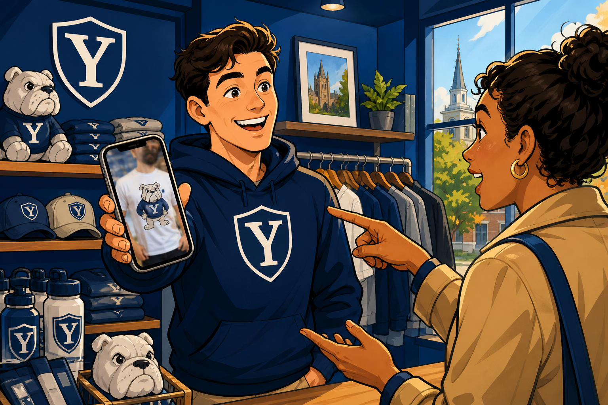

Lecture 6: Video Analysis

media/ask.mp4. If video capture is painful, use 5 stills in media/frames/ and skip ffmpeg — still do crop + vision. No starter zip required.
Step 1 Scaffold lec06 (toy catalog, not HW3) 0–6 min
Prompts in files. Outputs in a folder. Secrets in .env. A catalog so small you can see when the agent is lying.
Create lec06/ with: - media/ (I will add ask.mp4) - prompts/transcribe_ask.md, pick_frame.md, describe_crop.md, match_sku.md - toy_catalog.json with exactly 3 products: sku, name, color, sizes[], image_note (one sentence of what the photo would show) - sample_frames.py, transcribe_ask.py, inspect_region.py, mini_lookup.py - output/frames/, output/crops/, requirements.txt (openai, python-dotenv, pillow). Optional: opencv-python or imageio-ffmpeg for video. - .env.example, .gitignore for .env README: how to drop in a phone video. Do not write a real API key.
Step 2 Transcribe the ask 6–13 min
Speech carries size/color. Pixels carry the mascot. Do not merge those jobs in one mushy prompt yet.
Write prompts/transcribe_ask.md and transcribe_ask.py --video media/ask.mp4 --out-dir output Use Whisper or the OpenAI audio API. Save output/query_text.json with video_path, transcript, requested_color, requested_size (empty string if not spoken). Never invent a size.
Step 3 Sample frames (you pick the method) 13–20 min
Video in this course is stills you can point to. OpenAI’s own cookbook samples frames; Gemini would take the mp4 — we stay on the frame path so evidence is a file.
sample_frames.py --video media/ask.mp4 --out-dir output Save at least 5 jpgs under output/frames/ and output/frames.json with path + timestamp_sec. Document the sampling rule in README (every N seconds is fine).
Step 4 Pick a best frame, then crop in code 20–30 min
The model may propose a box. Pillow (or similar) must write the crop. No “I cropped it in my head.”
1) Using prompts/pick_frame.md, have vision pick the best product frame from output/frames.json. Save output/best_frame.json with path + reason. 2) inspect_region.py --frame PATH --x --y --w --h --out-dir output writes a crop under output/crops/, calls vision with prompts/describe_crop.md, saves output/crop_inspect.json with source_frame, crop_path, box, description. You may hard-code a box on the CLI for the first run if the model’s box is nonsense — the crop file must still come from code.
output/crops/ has an image you can open. Description talks about the garment, not the whole room.Step 5 Mini lookup: text shortlist, then vision, then refuse 30–38 min
Same order as the lecture diagram. Three SKUs only. Helpful hallucination is a fail.
mini_lookup.py reads query_text.json, crop_inspect.json, toy_catalog.json. Prompt match_sku.md: score each of the 3 SKUs 0-100 from the crop description + transcript; then if the top score is weak, status=not_in_inventory and sku="". Write output/mini_lookup.json with status (match|not_in_inventory), sku, reply (one sentence an associate could say), evidence (best_frame, crop_path, transcript_snippet). Do not invent a fourth SKU. Do not build an embedding index.
not_in_inventory, not a creative Yale banana tee.Step 6 Log prompts 38–40 min
Course habit: what you typed, in your words. If you are still debugging the crop, skip the stretch and log what you have.
Append a Lecture 6 section to AI_prompts.md with the prompts you actually used (paraphrase is required). Note one thing the first prompt got wrong (box, transcript, or over-eager match).
Stretch (after 40, or if you finish early): Second run on a still that should not match (a coffee mug). Save output/mini_lookup_no_match.json. Do not spend class time on a frame-count cost spreadsheet — that is Lecture 5 / Lecture 12 territory.